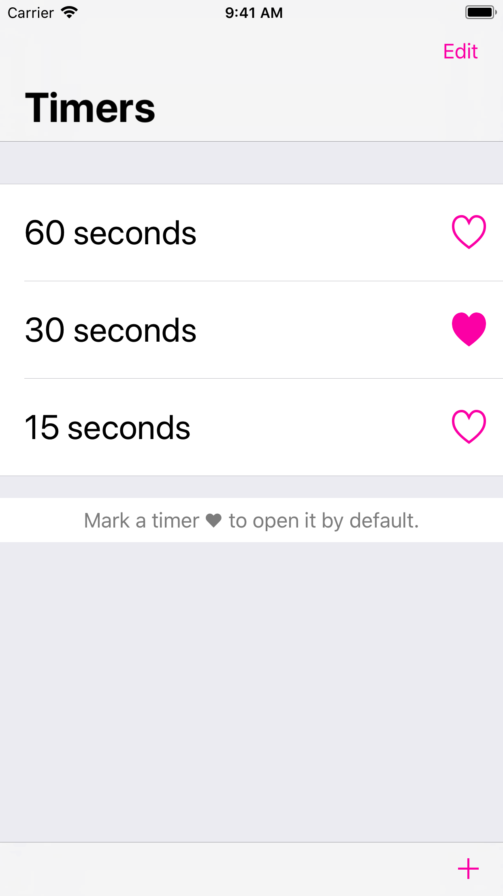

TimerSwipe

Summary
TimerSwipe is an iOS timer I designed and developed for use when the device screen is not visible. You can download TimerSwipe from the App Store today.
Screenshots

- 

Features
- Start timers easily regardless of awkward physical access or obscured sightlines to your device, as when exercising or stretching
- Save timers for future use
- Automatically opens to a favorite timer
- Full VoiceOver support
Interesting Bits
PermissionController is a view controller subclass that appears on first run, informs the user about local notifications, and requests permission to display them. I built it using two design patterns central to Cocoa Touch: dependency injection and delegation. I gave PermissionController a type method, instantiate(with:), that returns a PermissionController with the provided delegate pre-injected.
The instance thus created contains very little custom code. All the “work” it does is directly related to controlling its view and subviews. Handling user interaction is delegated to the PermissionControllerDelegate.